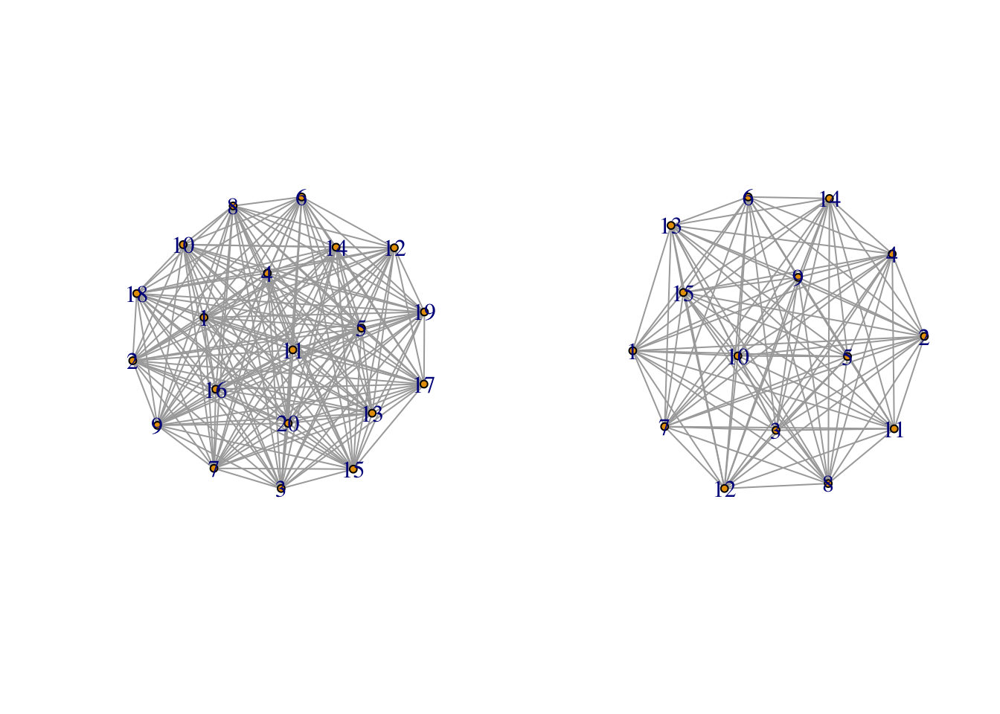

Глава 2 Счетные множества и другие бесконечности. Решение интересных задачек
Конспект: Илья Дуров
дата: 16 сентября 2016
2.1 Задача №1 (1.3 в задачнике) “Captain Nemo problem”
2.1.1 Условие задачи:
Вражеская подводная лодка находится где-то на числовой прямой (рассматриваем только целые координаты). Она начинает двигаться в определенном направлении, проходя за минуту целое число точек прямой. Вы не знаете ни ее начальной позиции,ни скорости движения вдоль прямой. При этом вы можете запускать торпеды куждую минуту, напрявляя их в любую точку с целой координатой - если подлодка в этоот момент времени находиться в этой точке, вы ее подбили и она тонет. У вас есть неограниченное количество времени и торпед для того, чтобы потопить вражескую лодку.
Разработаейте стратегию, которая в конечном счете гарантирует потопление подлодки.
2.1.2 Решение:
Заметим, что лодка характиризуется двумя параметрами: стартовой позицией (положение на целочисленной прямой) и скоростью-направлением движения. Таким образом за счетное число шагов (счетное число единиц времени и потраченных торпед) можно перебрать–“обстрелять” все гипотечиские положения лодки.
Графически это можно представить следующим образом:
s <- c(0, 1, 1, 0, -1, -1, -1, 0, 1, 2, 2)
v <- c(0, 0, 1, 1, 1, 0, -1, -1, -1, -1, 0)
d <- data.frame(s, v)
ggplot(d, aes(s, v)) +
xlab("Стартовая позиция") +
ylab("Скорость") +
xlim(c(-3, 3)) +
ylim(c(-3, 3)) +
geom_point(colour="blue") +
geom_segment(aes(xend = c(tail(s, n = -1), NA), yend = c(tail(v, n = -1), NA)), arrow=arrow(length = unit(0.3, "cm")))## Warning: Removed 1 rows containing missing values (geom_segment).
Здесть, например, точке (0,0) соответсвует лодка, стартующая из положения 0 на целочисленной прямой и двигающаяся со скоростью 0, то есть стоящая на месте. Поэтому в первый момент времени удобно направить торпеду в эту точку, начав перебор всех вариантов. Пусть дальше стреляем в лодку, соответсвующую точке (1,0): у нее скорость тоже равна 0, поэтому даже во второй момент времени она останется на стартовой позиции 1, куда мы и отправим вторую торпеду.И так далее по спирали, как показано на рисунке. Для уверенности, рассмотрим седьмой момент времени (шаг), которому соответсвуюет точка (-1,-1). Стартуя за из точки -1, за семь секунд эта лодка продалевает дистанцию в семь единиц, двигаясь влево по числовой прямой. В итоге она оказывается в точке -8, куда мы и отправляем торпеду, помогая капитану Немо победить зловредных врагов.
2.2 Бесконечности бывают разные.
Градация бесконечных множеств:
счетное \(->\) континуум (например, R — множество рациональных) \(->\) больше континуума (например множество все подмножеств R)
2.3 Задача №2 (1.8) “Эта задачка — просто космос”
2.3.1 Условие задачи:
Назовём две бесконечных вправо последовательности из нулей и единиц «похожими», если они отличаются конечное количество членов. Это отношение «похожести» разбивает все последовательности на классы похожих последовательностей.
Какова мощность множества последовательностей похожих на последовательность из одних нулей?
Какова мощность множества классов похожих последовательностей?
2.3.2 Решение:
- Для урощение воспрятия подключим воображение и представим каждую последовательность и похожие на нее в виде созвездий, звезды в которые объединяются по принципу “похожести” (теперь вы поняли, почему задачка — космос?). Или графа, где вершины — последовательности, а ребра между вершинами указывают на наличие похожести этих вершин, причем каждое созвездий — связный граф.
g0 <- sample_gnp(20, 1)
g1<- sample_gnp(15, 1)
par(mfrow=c(1, 2))
plot.igraph(g0, vertex.size = 5)
plot.igraph(g1, vertex.size = 5)
Так как по условию, “похожие” — те последовательности–звезды, которые отличаются друг от друга на конечное число элементов (0 или 1), то легко понять, что и множество “похожих” последовательностей на последовательноть только из нулей будет не более, чем счетное множество.
- Теперь повеселее. Главное, что надо понять при решение этого, казалось бы, нетривиального пункта, как раз довольно тривиально - множество всех звезд представляет собой объединение всех созвездий. Вторая важная вещь — то, что было установленно на одном из предыдущих занятий (вспоминаем канторовскую диагональную процедуру): множество последовательностей из 0 и 1 (звезд) несчетно (имеет мощность континуум).
Теперь, когда мы вооружены этими двумя фактами, как Рембо, давайти разберемся с решением это задачей, так же как и он разбирался со своими: предположим, что совездий конечно или счетно. Но, как известно, объединение счетного или конечного числа счетных множеств (множеств звезд в каждом созвездии - см. первый пункт) тоже счетно, а мы только что установили, что объединение созвездий дает несчетное множество звезд (космически звучит!). Значит, и множество созвездий представляет собой множество мощности континуум.
Более формальное решение выглядит так:
\(B=\{ Ci \}; A = \cup Ci => card A = card (\cup Ci) = континуум <=> card B = континуум\)
Тут A — множество звезды, С — множество звезд в i-ом созвездии, B — множество созвездий.
2.4 Задача №3 (1.9) “Помоги Даше спасти гномов от дракона”

Ты поможешь Даше спасти гномов
2.4.1 Условие задачи:
Злобный Дракон поймал бесконечное счётное количество гномов. Расставил их в шеренгу так, что первые видит всех остальных, второй –— всех, начиная с третьего гнома, и т.д. Далее Дракон надевает каждому гному либо чёрный, либо белый колпак. Гномы одновременно пытаются угадать цвет своего колпака. Гномы, не угадавшие цвет своего колпака, съедаются Драконом.
Есть ли у гномов стратегия, позволяющая им иметь конечные боевые потери при встречи со Злобным Драконом?
2.4.2 Решение:
Решение задачи с нуля может показаться довольно сложной, но у нас, на самом деле, есть мощный инстремент выводов из предыдущей. Итак, у нас есть счетное число гномов, которое увидело подлетающего дракона, промышляющего надеванием колпаков. Эти гному знют, что колпаки бывают двух цветов — черного и белого, поэтому последовательность из белых и черных колпаков (надетых на головы бедных гномов, конечно) является последовательностью абсолютно эквивалентной последовательности из нулей и единиц,как рассмотренной в предыдущей задаче. Что же ммешает нам посоветовать гномам заранее определить представительскую последовательность в каждом каждом классе похожих (главную звезду в созвездии похожих звезд колпаков) и угадывать свой цвет, согласно ей?!
Ниже представлен пример визуализации выбора представительской последовательности в классе похожих (красная вершина — выбранная последовательность):
g3 <- sample_gnp(10, 1)
plot.igraph(g3,layout=layout_as_star,
vertex.color=c("red", rep("NA", length(V(g3)) - 1)))
Тогда, каждый гном, видя цвета колпаков своих друзей, стоящих впереди, сможет определить класс, к которому принадлежит реальная последовательность колпаков (определенная драконом при расдаче колпаков). Так как эта последовательность “похожа” на выбранную гномами в качестве представительнской, то она будет оличаться от нее на конечное число колпаков. Значит, гадая согласно выбранной последовательности, лишь конечное число гномов (бедняги) назовут свои цвета неправильно.
2.5 Задача №4 “И Деды Морозы бывают хитрыми” (картинка с Жебером)

Злой Жебер
2.5.1 Условие задачи:
Дед Мороз пришёл к детишкам на Новый Год с мешком, в котором счётное количество пронумерованных конфет. Конфеты можно есть только после наступления Нового Года. Ровно за минуту до Нового Года Дед Мороз выдаёт детишкам конфеты номер 1 и 2 и тут же забирает конфету номер 1 обратно. Ровно за полминуты –— выдаёт конфеты номер 3 и 4 и забирает конфету номер 2. Ровно за четверть минуты –— выдаёт конфеты номер 5 и 6 и забирает конфету номер 3. И так далее, ускоряясь, выдаёт из мешка две очередные конфеты и забирает у детишек конфету с наименьшим номером.
На сколько изменяется количество конфет у детишек за одну операцию дарения–забирания?
У кого к Новому Году окажется конфета номер 1?
У кого к Новому Году окажется конфета номер 2016?
Сколько конфет будет у детишек к Новому Году?
2.5.2 Решение:
Первый вопрос — для понимания, но с подвохом для дальнейших расуждений: за одну операцию Дед Мороз дарит две конфеты и забирает одну, следовательно, количество конфет у детей меняеться на 1 за одну операцию, причем конфет становиться на одну больше.
Этот вопрос тоже не сложен, но играет важную роль в дальнейшем понимании: Дед Мороз забирает первую конфету у детей еще при первой операции, значит, в итоге она остается у него.
Вот здесь будет посложнее: казалось бы времени до Нового года так мало — всего минута — а Дед Мороз должен успеть выдать 2016 конфету и забрать ее. Для упрощения понимания давайте построим таблицу:
| Минут до новго года | ДМ выдал | ДМ забрал | У детей |
|---|---|---|---|
| 1 | 1;2 | 1 | 2 |
| 1/2 | 3;4 | 2 | 3;4 |
| 1/4 | 5;6 | 3 | 4;5;6 |
| 1/8 | 7;8 | 4 | 5;6;7;8 |
| 1/16 | 9;10 | 5 | 6;7;8;9;10 |
На первый взгляд может показаться, что количество конфет у детей по мере приблежения к Новому году расте — это же говорит нам и ответ на первый пункт (+1 за операцию). Однако можно заметить, что, например, пятую конфету ДМ забирает у детей на пятой операции за 1/16 (\(1/16=1/2^4\)) минут до праздника. Точно так же можно определить номер операции и время, оставшееся до Новго года, для 2016–конфеты: она будет забрана у детей на 2016 шаге за \(1/2^{2015}\) минут до торжества. Дело в том, что моменты времени (доли минуты) представляют множество рациональных чисел, которое, как известно, счетно (было установлено на первом занятии), а не конечно, как привычно считать обычному человеку.
- Этот факт помогает понять, что мы с точностью можем назвать момент времени (минут до Нового года), когда будет забрана n-ая конфета:
\(Tn=1/2^{n-1}\), где T — момент времени забирания кофеты с номером n
Формализируем наше решение: Пусть \(A_i\) — множество конфет у детей сразу после i-ой операции “дарения–забирания”. Тогда нетрудно увидеть (см. таблицу), что \(card A_i = i\). При этом \(\{A_i\}\) — возрастающая последовательность (как и было показано в пункте 1 и таблице). Следовательно, \(\lim_{i\to\infty} card A_i = \infty\).
Однако физически этот предел означет, сколько конфет будет у детей за мгновение до праздника. Но после этого мгновения наш сверхсветовой Дед Мороз все еще будет продолжать своершать свои хитрые операции. То есть нам надо узнать, размер множества \(A_i\) на очень отдаленном шаге. Что бы это понять, необходимо проследить за каждой конфетой — определить, будет ли она входить в это отдаленное множество. Иначе — будет ли она когда-нибудь забрана Дедом Морозом. Но нам известно, что для каждой конфеты можно определить момент ее забирания, и это множество останется пустым, а его размерность нулевой.
\(\lim_{i\to\infty} A_i = \emptyset => card (\lim_{i\to\infty} A_i) = 0\).
То есть в Новый год все конфеты окажутся у Деда Мороза (хотя такими действиями он порочит это имя)
2.6 Бонус
После хорошего занятие, можно сделать маленькую передышку и посмотреть видео, которое, скорее всего послужило основой задачи про Дедад Мороза: